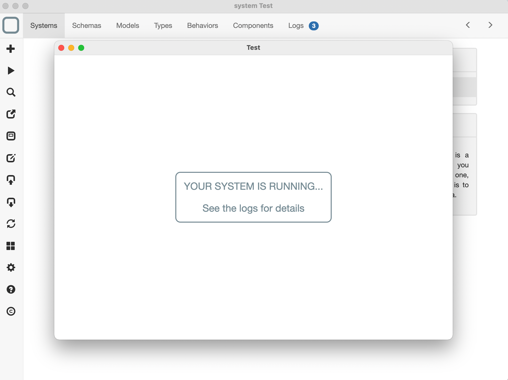
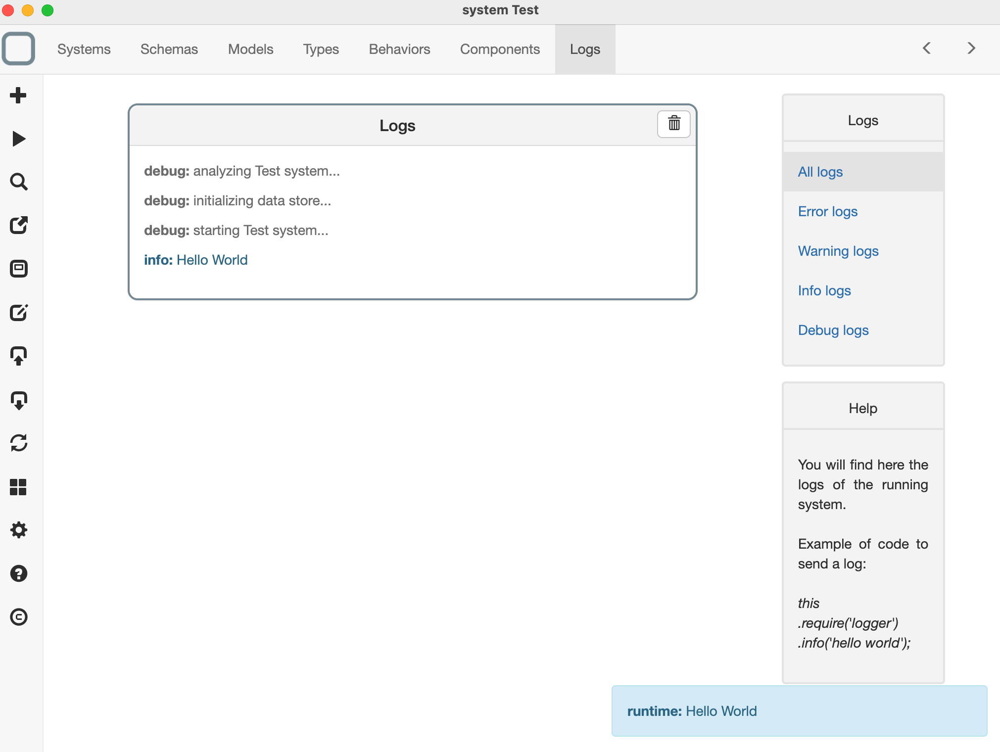
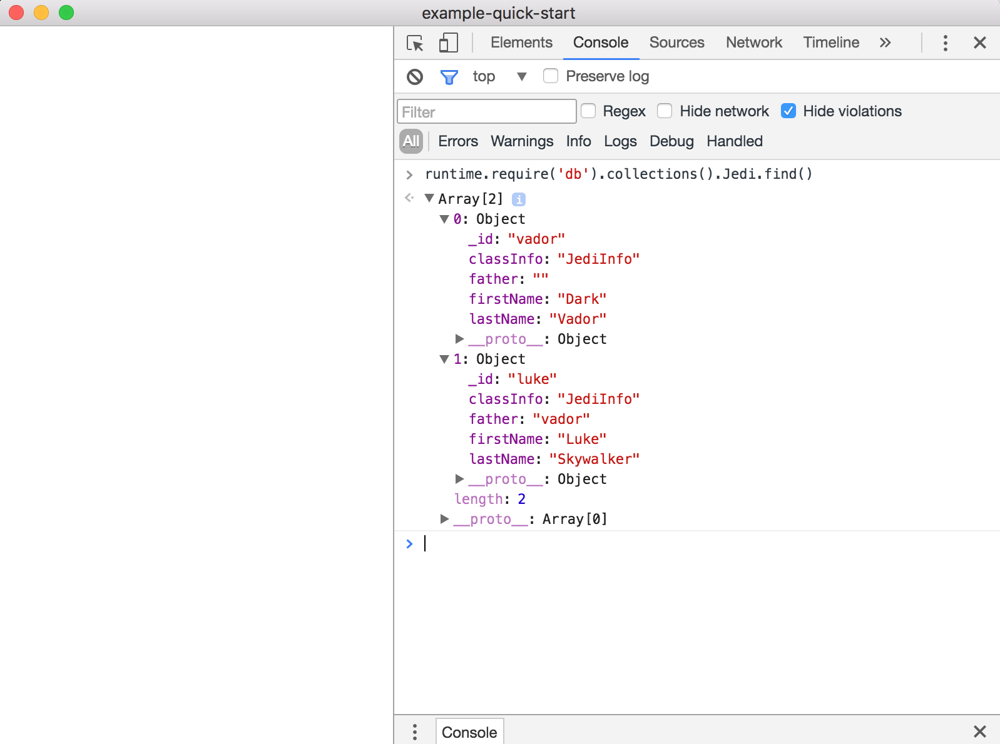

Run your System
You can run and debug your system in System Designer.
Run your system
To run a system:
- click on the run button on the left (the 2nd button from the top) and
- a new window will be open and your system will run in its context.

You can run Node.js APIs
If your systems uses native Node.js apis, you can run your system with System Designer (* Windows, macOS and Linux versions only).
What happens when you run your system ?
When you run your system:
- a new window loads a runtime, System Runtime,
- your system is exported as JSON and then imported in System Runtime data store,
- your models will be analyzed,
- if the models are valid, System Runtime generates a class in memory for every model,
- System Runtime will then import your components as documents in its data store,
- when a document is inserted in the data store, a related component is then created in memory,
- System Runtime will then run the start behavior of your system and
- a log will then send everytime a component is created, updated or deleted at runtime.
As you can see, System Runtime acts as an ODM (Object-Document Mapper) to manage your components as NoSQL Documents.
Debug your system
To debug your system:
- add some logs in your code. For example, you can add this code in the start method of your system:
function start() {
this.require('logger').info('Hello World');
}
- run your app,
- click on the Logs tab and
- all the logs will be shown there.

How can I log informations?
logger APIs are inspired by Log4J, so you have: - this.require('logger').debug('this is a debug message''); - this.require('logger').info('this is an info message''); - this.require('logger').warn('this is a warning message''); - this.require('logger').error('this is an error message'');
What are these informations shown at the bottom?
info, warn and errors logs of your systems are also shown as messages (at the bottom right of System Designer). debug logs are not shown as messages because the runtime send many debug logs by default.
Advanced mode
Compatibility version
This feature is only available on the Windows, macOS and Linux versions of System Designer.
When running your application:
- go to the menu,
- click on Menu > Toggle Developper Tools.
The Chrome Dev Tools is opened and you can debug your system by adding for example some debugger instructions in the code of your behaviors.

Use System Runtime APIS
Remember that you can use System Runtime APIs to explore your system.